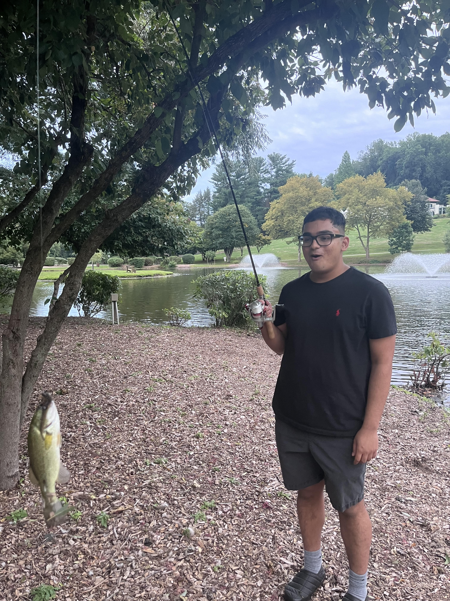

Hello! This is my sample fishing website! I've been fishing for about 3 years now and I first got into it at the start of college. My first fishing trip was with a couple of friends when I was in NUin in Glasgow. It was a great experience and I've been hooked ever since. I fish the most back home during the summer months in Pennsylvania when the water is warm and the fish are active. I mostly go freshwater fishing and enjoy catching bass and trout primarily. In Boston, I like to go over to Catle Island in South Boston for some saltwater fishing. I'm not too sure the names of the fish that I catch but I have a great time doing it and am sure I'll learn soon!
